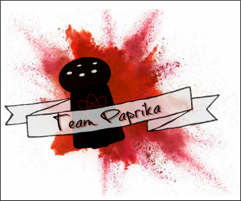

<ion-menu [content]="content" #mainMenu>
  <ion-header>
    <ion-toolbar>
      <ion-title>Main Menu</ion-title>
    </ion-toolbar>
  </ion-header>
  <ion-content>
    <ion-list>
      <ion-item (click)="openPage(profilePage)">
        
        <h2>View Profile</h2>
        <p>Profile Information</p>
        <i class="icon ion-android-settings icon-accessory"></i>
      </ion-item>
      <button ion-item (click)="openPage(homePage)">
        View Transaction History
      </button>
      <button ion-item (click)="openPage(graphs)">
        Graphs
      </button>
      <button ion-item (click)="openPage(addTransactionPage)">
        Record a Transaction
      </button>
      <!--<button ion-item (click)="openPage(billPage)">-->
        <!--Pay a Bill-->
      <!--</button>-->
      <button ion-item (click)="openPage(exportPage)">Export Data</button>
      <button ion-item (click)="openPage(importPage)">Import Data</button>
      <button ion-item (click)="logout()" block color="primary">
        Logout
      </button>
    </ion-list>
  </ion-content>
</ion-menu>
<ion-nav #content [root]="rootPage"></ion-nav>
